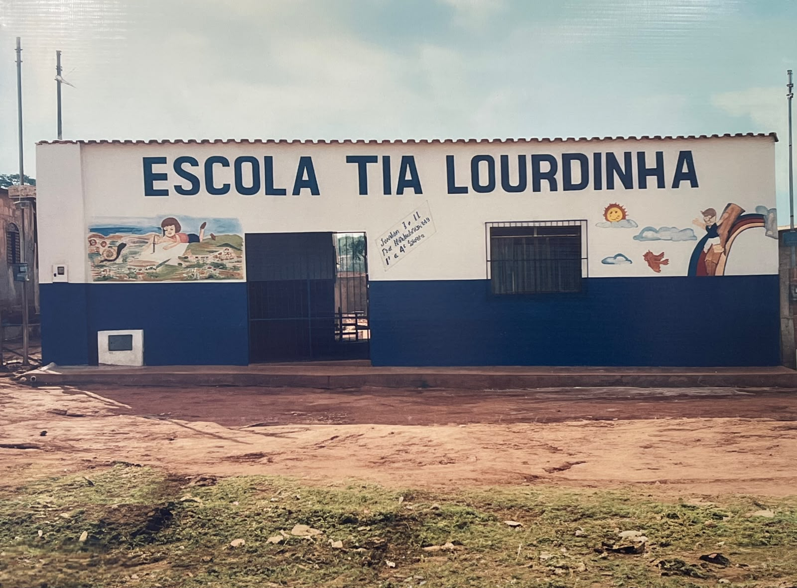
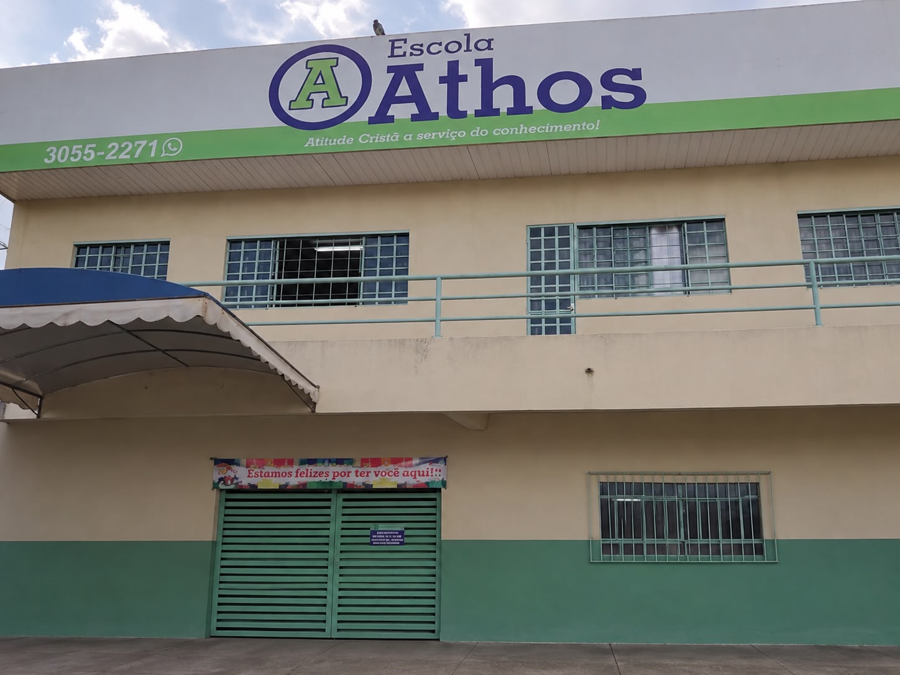
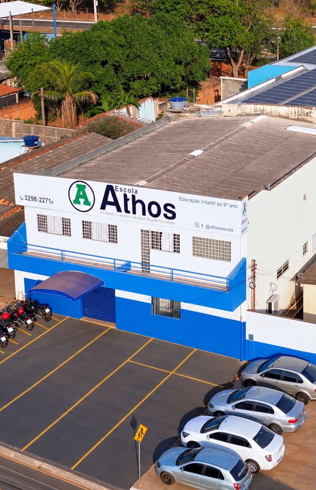
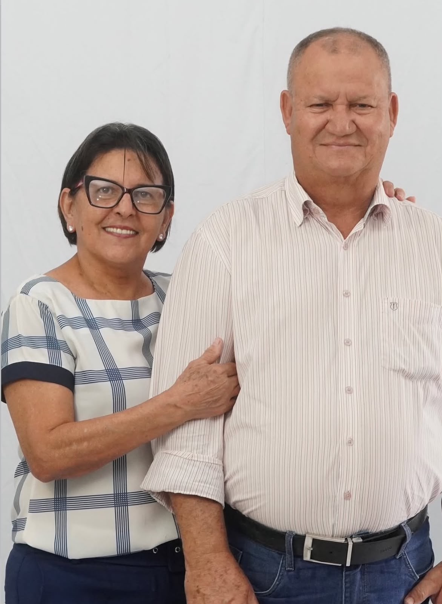

01
MISSÃO
Educar com propósito.
Unir ensino de qualidade, acolhimento e princípios cristãos para contribuir com a formação acadêmica, humana e social de cada aluno.

A Escola Athos acredita em uma educação que une conhecimento, formação cristã, acolhimento e acompanhamento próximo. Cada aluno é visto de forma individual, com atenção ao seu desenvolvimento, às relações e à construção de valores.
Da Educação Infantil ao 9º ano, a escola busca criar um ambiente seguro, organizado e humano, onde aprender também significa conviver, amadurecer e se preparar para os próximos desafios.
Antes de ser Athos, tudo começou de um jeito simples: duas salas, quadro-negro, giz e o desejo de oferecer uma educação de qualidade com princípios cristãos.

Maria de Lourdes Moreira Agar inaugurou a escola atendendo inicialmente Jardim I, Jardim II e Pré-Alfabetização. Com o passar dos anos e a procura das famílias da região, novas séries foram sendo implantadas.
“O temor do Senhor é o princípio da sabedoria.”
Duas salas, Educação Infantil e uma escola nascendo junto com a comunidade.
O Ensino Fundamental I foi sendo implantado gradativamente a pedido das famílias.
A escola evoluiu em estrutura, proposta pedagógica e experiências para os alunos.
Uma história que segue sendo construída com alunos, famílias e educadores.



Francisco Nunes, o Tio Chico, e Maria de Lourdes Moreira Agar, a Tia Lourdinha, deram início a uma história construída com fé, cuidado e compromisso com a educação.
Francisco NunesFundador · Tio Chico
Maria de Lourdes Moreira AgarFundadora · Tia Lourdinha
“Somos uma família que educa, acolhe e transforma.”
Duas salas, quadro-negro e giz... Foi esta estrutura que deu vida à Escola Athos. Confiando em Provérbios 3:13 — “O temor do Senhor é o princípio da sabedoria” —, a escola já nasceu com um diferencial: raízes e fundamentos cristãos.
A escola foi inaugurada em 7 de fevereiro de 1994 pela diretora Maria de Lourdes Moreira Agar. Na época, levava o nome de Escola Tia Lourdinha e atendia a Educação Infantil, com Jardim I, Jardim II e Pré-Alfabetização. Nos anos seguintes, diante da necessidade da região e dos pedidos das famílias, novas séries foram implantadas gradativamente.
Desde o início, o trabalho foi voltado para um ensino de qualidade e para o desenvolvimento socioeducativo dos alunos, valorizando princípios éticos, morais, sociais e culturais. A participação da família sempre foi entendida como parte essencial do processo educacional.
A Escola Athos passou — e continua passando — por mudanças físicas e pedagógicas. Cada fase trouxe novos aprendizados, mantendo viva a ideia de que educar é um processo contínuo de crescimento.
Uma escola que busca viver, no dia a dia, valores como dignidade, honestidade, caráter, integridade, lealdade, respeito mútuo e humildade.
André Gustavo Agar Costa e Michelle Ribeiro Gomes Agar estão à frente da Escola Athos, dando continuidade à história da instituição e acompanhando de perto a rotina escolar, os alunos, as famílias e a equipe.
André Gustavo Agar CostaDiretor
Michelle Ribeiro Gomes AgarDiretora
Unir ensino de qualidade, acolhimento e princípios cristãos para contribuir com a formação acadêmica, humana e social de cada aluno.
Ser reconhecida pelo ensino, pelo cuidado próximo e por uma educação que acompanha as transformações sem deixar de lado os valores que fazem parte da escola.
Fé · Família · Respeito · Integridade · Acolhimento · Conhecimento
Reunimos aqui documentos que orientam a proposta pedagógica, a organização escolar e os direitos das crianças e adolescentes.
Documento que apresenta a identidade pedagógica da instituição, sua filosofia, princípios, organização curricular, metodologias, avaliação e metas educacionais.
Documento que organiza o funcionamento da Escola Athos, definindo direitos, responsabilidades, procedimentos administrativos e diretrizes pedagógicas.
Referência legal para a proteção integral de crianças e adolescentes, incluindo direitos relacionados à educação, dignidade, convivência e desenvolvimento.
Consultar ECA no site oficial →Educação Infantil, Fundamental I e Fundamental II em uma jornada contínua, com cuidado, desenvolvimento e novos desafios em cada fase.
Conheça nossa estrutura, equipe e proposta pedagógica.